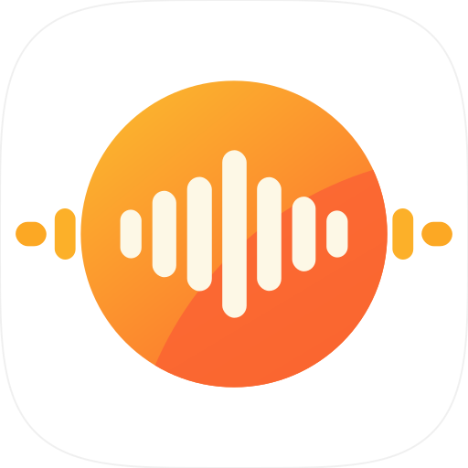
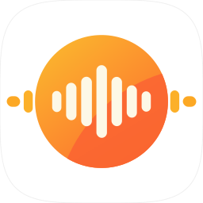

设计没有动：橙色圆盘、七根奶油白声波柱、两侧溢出的小段，全部沿用原稿的实测几何。 只做了两件事——把图片外框的四个角改成圆角，导出四角透明；把内容整体放大到占满横向空间， 原稿圆盘只占画布 56%，放进卡片后上下会空出一大块。

几何直接量自原稿，不重画。圆盘直径 706、圆心 (626.5, 607.5)；七根条的中心距 80，宽度 49–57、高度 112 / 199 / 263 / 386 / 262 / 172 / 108；内胶囊 48×118 距圆边 22，外胶囊 71×56 距内胶囊 20。整体缩放到 95% 后居中。
圆角用的是 4.2 次超椭圆，和 Windows 11 / macOS 图标的曲率接近。导出的每一档都是独立渲染的矢量，不是缩放位图，所以 16px 也不会糊成一团。

assets/SXS.png（2000px）、assets/SXS.ico（7 档）、
assets/SXS.icns（macOS）、docs/images/icon.png 全部换成新图。
npm run check:assets 通过，18 个必需资源齐全。下次 npm run make 打出来的安装包就是这张图。